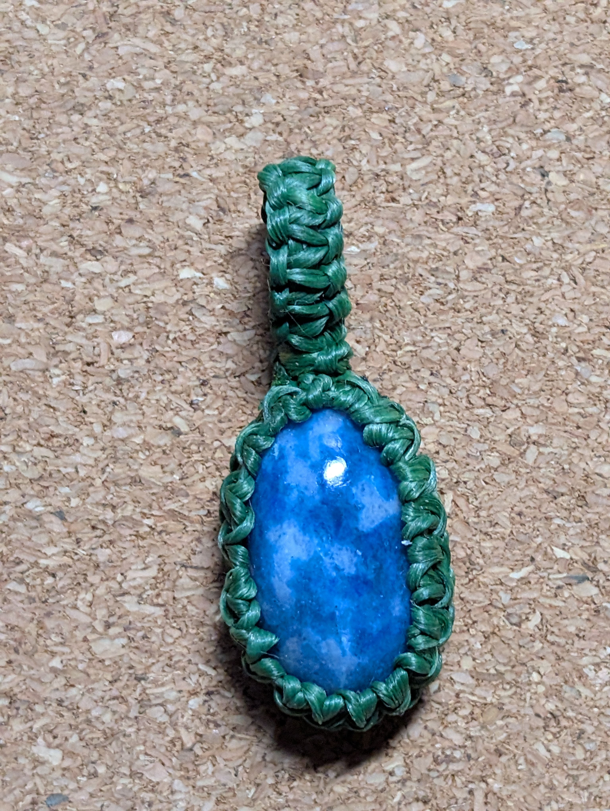
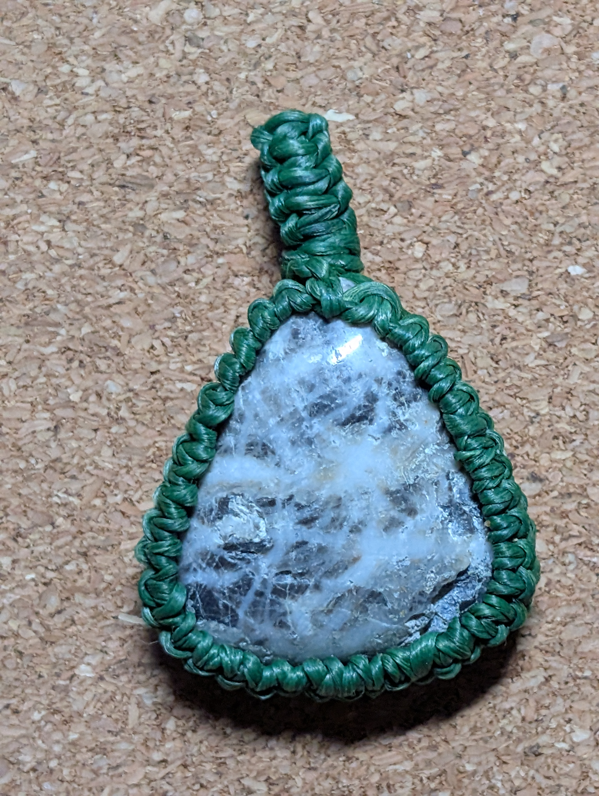
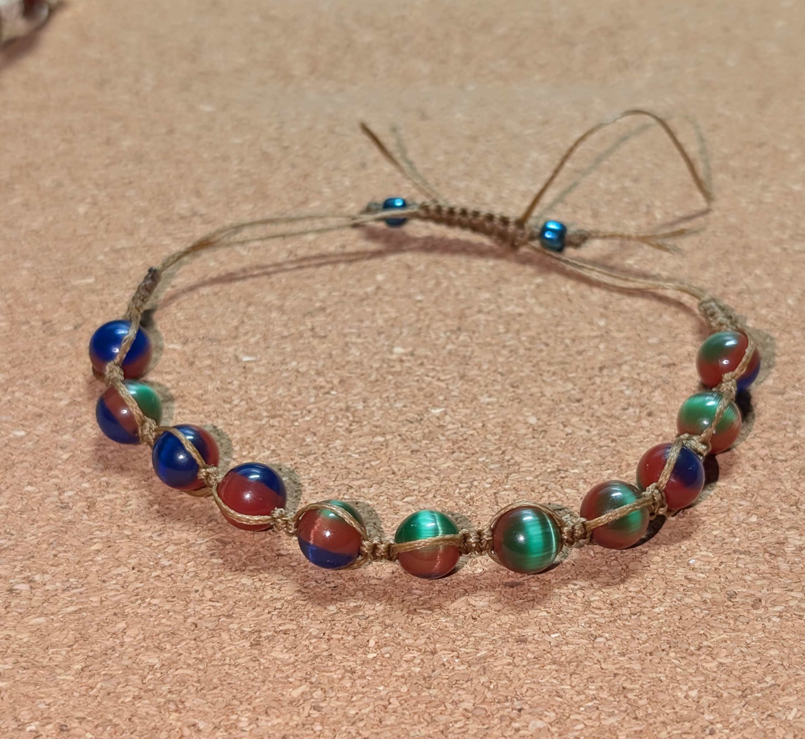
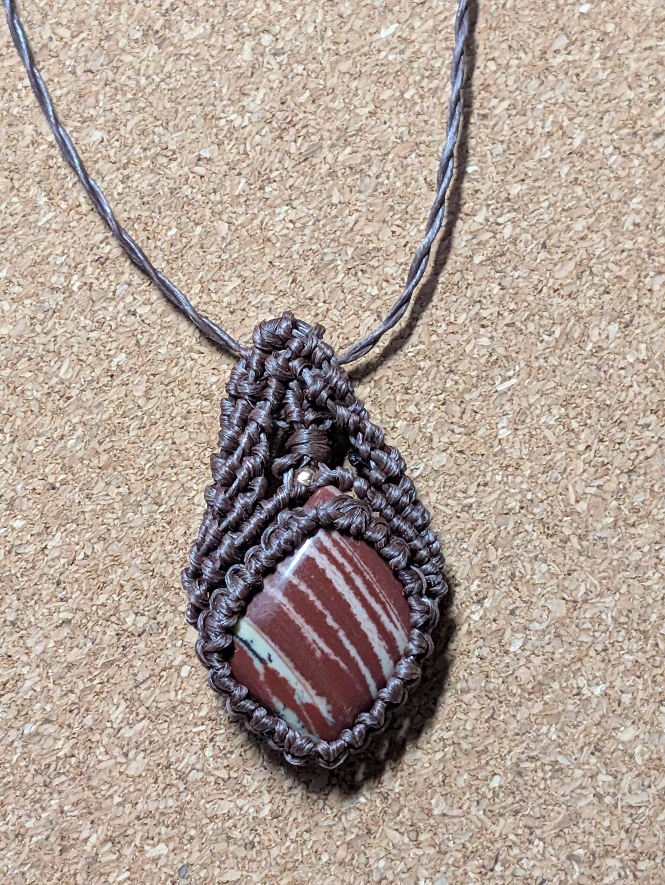
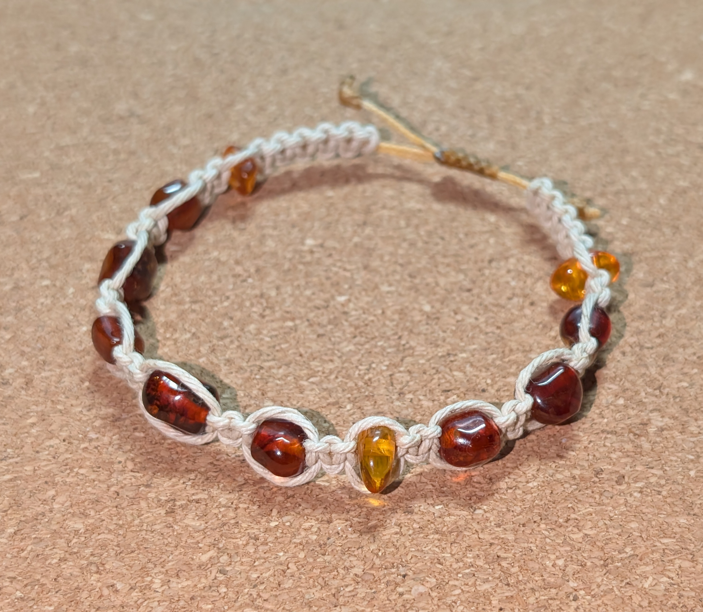
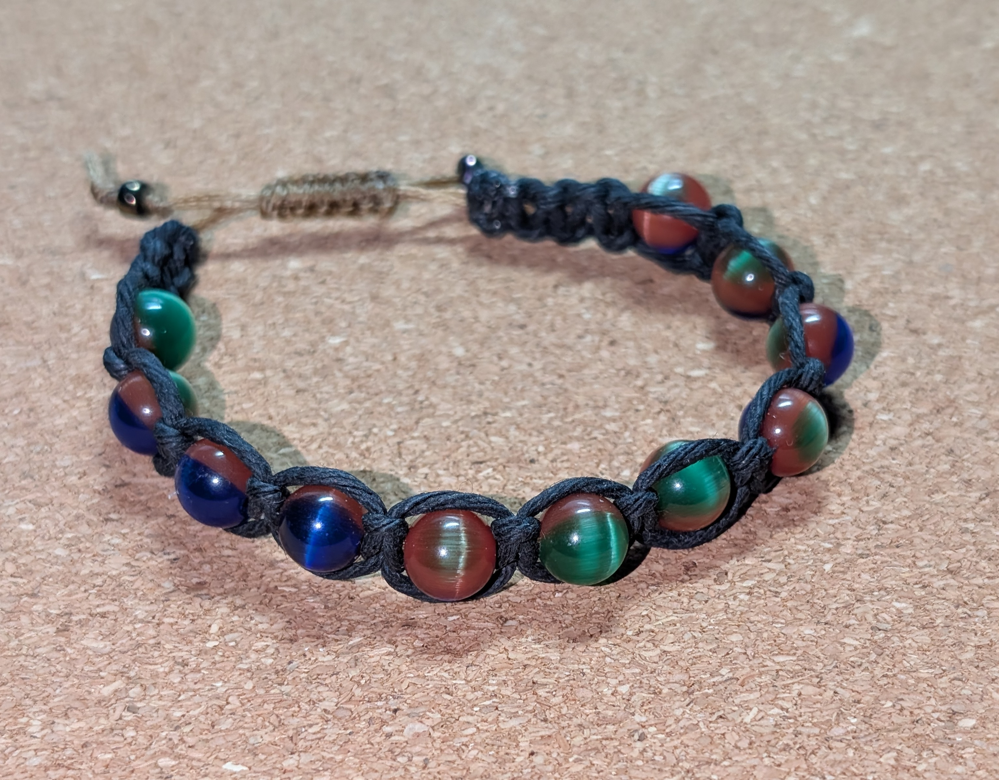

Create Your Own Natural Stone Jewelry
Discover the art of micro macramé in this relaxed, hands-on, beginner-friendly workshop. You'll learn essential knots and simple finishing techniques while completing three pieces of jewelry: one beaded bracelet and two natural-stone pendants. No previous macramé or jewelry-making experience is necessary.
What You'll Make
Learn the basic techniques for wrapping natural stone cabochons and creating a simple beaded micro macramé bracelet. These examples show the style of projects we'll make together.






Photos show examples of finished projects. Because we work with natural stones, the cabochons available during the workshop will be different from those shown in the photographs.
Every Stone Is Unique
We work with natural stones, so every cabochon is one of a kind. Colors, patterns, shapes and sizes naturally vary. You'll choose from the cabochons provided for the class and create pieces that are uniquely yours.
About the Workshop
No previous macramé or jewelry-making experience is necessary. We'll begin with basic knots and work step by step through the process of creating wearable jewelry.
You'll learn how to work with cord, secure beads, wrap natural stone cabochons and finish your pieces. By the end of the workshop, you'll have three finished pieces to take home — plus the basic skills and tools needed to continue experimenting with micro macramé on your own.
During the workshop you'll make:
- One beaded micro macramé bracelet
- Two natural-stone cabochon pendants
- Basic micro macramé knots
- Stone wrapping techniques
- Simple finishing techniques
Your $30 Supply Kit
Your personal workshop kit contains the materials you'll need to complete all three class projects.
- Natural stone cabochons for two pendants
- Beads for one bracelet
- Macramé cord for the workshop projects
- Your own macramé work board or cushion
- Pins for securing your work
Your work board or cushion and pins are yours to take home and use for future projects.
What to Bring
We'll provide the specialized materials for your projects. Please bring:
- A pair of small, sharp scissors
- Reading glasses, if you normally use them for detailed handwork
- A magnifier, if you prefer one for close work
Micro macramé involves small knots and detailed handwork, so please bring any visual aids that make close-up work comfortable for you.
Want to Keep Creating at Home?
Optional practice kits will be available for participants who would like to continue working on their new micro macramé skills after the workshop.
Pendant Practice Kit
Includes five natural stone cabochons and a spool of macramé cord for practicing additional stone-wrapping projects at home.
Bracelet Practice Kit
Includes 11 beads and cord for making one additional micro macramé bracelet at home.
Looking for something special? A small selection of additional natural stone cabochons, including premium stones, will also be available for individual purchase.
Come Create With Us
Spend three creative hours turning natural stones, beads and cord into jewelry you'll be proud to wear — or give as a handmade gift.
Space is limited. To register, please contact Redlands Art Association.
909-792-8435
Redlands Art Association
215 E. State St.
Redlands, CA 92373